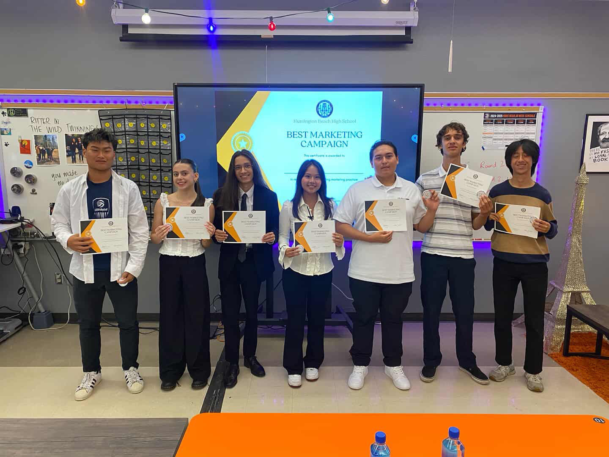
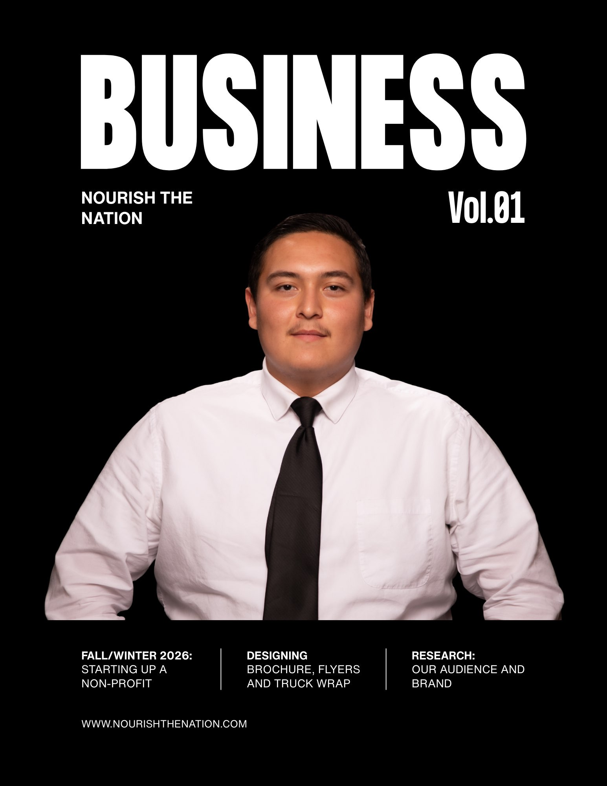
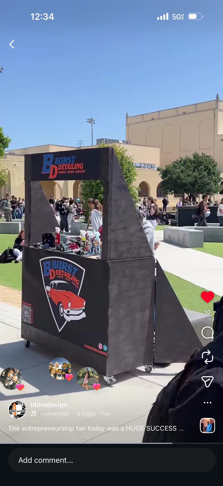
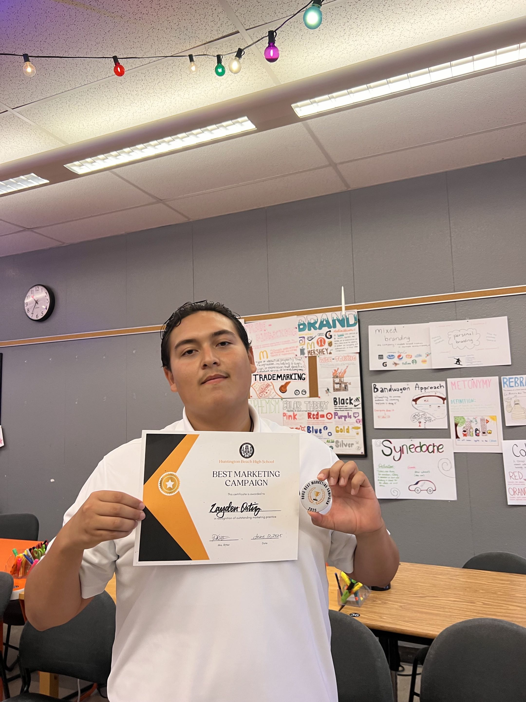

I am an entrepreneur and undergraduate student at the University of California, Riverside, pursuing studies at the intersection of business and data analytics. My journey began with a hands-on curiosity for building ventures from the ground up, grounded in a dedication to high operational standards, structured workflows, and delivering tangible value. From launching independent ventures to navigating academic research and modern analytical tools, my focus centers on transforming practical problem-solving into scalable, sustainable business models.
Much of my foundational professional experience stems from establishing and operating Burst Detailing, a specialized automotive care and reconditioning business based out of Huntington Beach, California. Under the mentorship of family tradition and personal initiative, I developed an appreciation for technical precision, supply chain logistics, direct-to-consumer client acquisition, and high-tier customer service. Running day-to-day operations taught me that true quality lies in the discipline of the process—whether managing multi-stage vehicle corrections, evaluating chemical safety and equipment durability, or optimizing appointment scheduling to maintain consistent revenue flow.
Alongside hands-on field operations, I explored digital commerce and operational synergy by managing Proficient Provisions, an independent e-commerce venture on Amazon. This initiative served as a laboratory for understanding procurement pipelines, wholesale pricing dynamics, and margin analysis. By leveraging strategic sourcing and digital product placement, I generated startup capital that directly reinvested into my service business, demonstrating how digital retail channels and physical service trades can cross-fund and strengthen one another.
Currently, I am expanding these practical experiences into quantitative problem-solving through academic coursework in computing, economics, and business analytics at UC Riverside. Today's competitive landscape demands more than standard execution—it requires interpreting customer trends, financial modeling, and leveraging computational tools to streamline workflows. Moving forward, my goal is to bridge operational expertise with data-driven decision-making, building ventures and business systems that are resilient, analytical, and customer-first.
• Founded and managed an independent automotive detailing venture, overseeing client acquisition, supply procurement, and field operations.
• Performed multi-stage paint correction, interior restoration, and chemical surface protection with a focus on quality control.
• Managed operating cash flow, reinvesting revenue into commercial extraction and polishing equipment.
• Developed client communication and booking pipelines to cultivate a consistent base of repeat local clients.
• Co-founded an emerging community initiative focused on local youth engagement, mentorship, and resource distribution.
• Structured operational logistics for volunteer scheduling, donation collections, and outreach events.
• Partnered with regional stakeholders and community members to identify supply needs and coordinate distribution.
• Built outreach campaigns to raise program awareness and drive ongoing volunteer recruitment.
• Executed residential maintenance, structural repairs, and landscape upkeep across diverse property sites.
• Assessed repair requirements and safely handled trade equipment to complete projects under strict timelines.
• Collaborated with lead contractors to estimate materials, stage job sites, and enforce work safety guidelines.
• Interacted with clients on-site to verify project specifications and ensure work met customer standards.
• Operated an independent storefront on Amazon, managing inventory sourcing, margin analysis, and wholesale volume purchasing.
• Coordinated business procurement workflows to reduce product acquisition costs and maximize margins.
• Reinvested generated digital storefront capital directly into secondary service business equipment.



